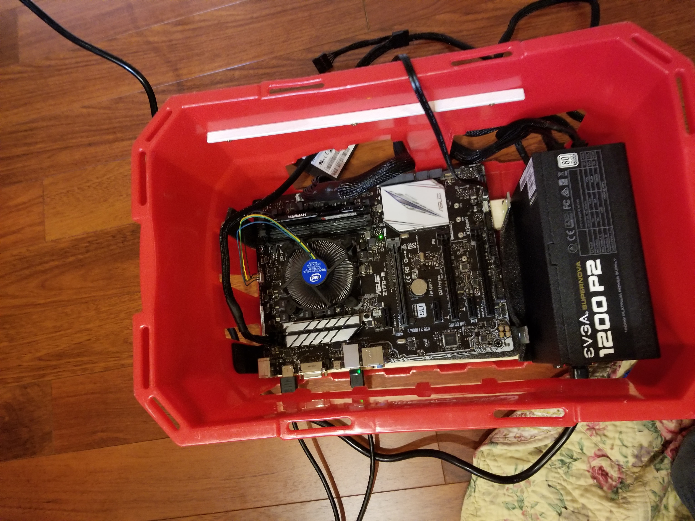
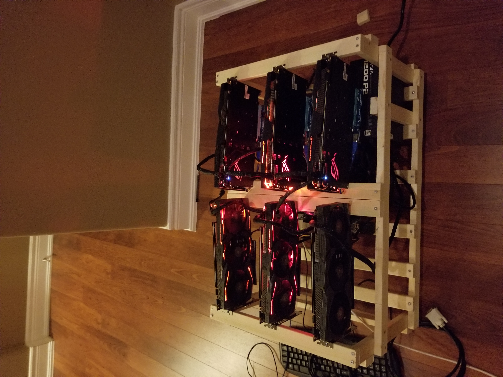

Building a Mining Rig
In the summer of 2017 I built a 6-GPU cryptocurrency mining machine from scratch. What followed was a crash course in thermal management, hardware compatibility, and mining software — and a total bill of $5,302.47 (before Windows and electricity).
Hardware
| GPU | 6× ASUS ROG Strix GTX 1070 8GB |
| PSU | Corsair HX1200i 1200W |
| CPU | Intel Core i3-6100 |
| Motherboard | ASUS Z170-E |
| RAM | Kingston DDR4 2133 |
| Storage | SanDisk SSD PLUS 120GB |
| Total cost | $5,302.47 |
Problems Along the Way
Nothing about this build went smoothly. The first major issue was faulty RAM that prevented the system from booting across multiple motherboards — a frustrating red herring that burned a lot of time early on.
Once the machine posted, Windows 10 would only recognize 4 of the 6 GPUs. The fix was enabling 4G encoding in the BIOS, which unlocks the memory address space needed for more than four PCIe devices. Not obvious if you haven't seen it before.
Mining software was its own adventure. Ethminer failed outright, so I switched to Claymore Dual Miner, which worked and had the added benefit of being able to mine two coins simultaneously.
Thermal Management
The original build packed the GPUs close together to keep the frame compact. That was a mistake. With all six cards running flat out, temperatures climbed to 78–86°C — hot enough to throttle performance and risk long-term damage.

After redesigning the frame to spread the GPUs out with proper spacing, temperatures dropped to 61–66°C — a meaningful improvement that restored full boost clocks and reduced fan noise.
